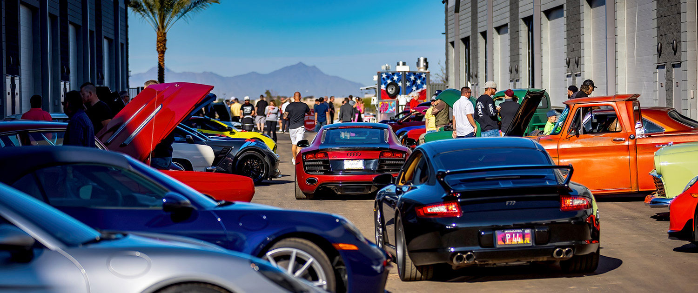
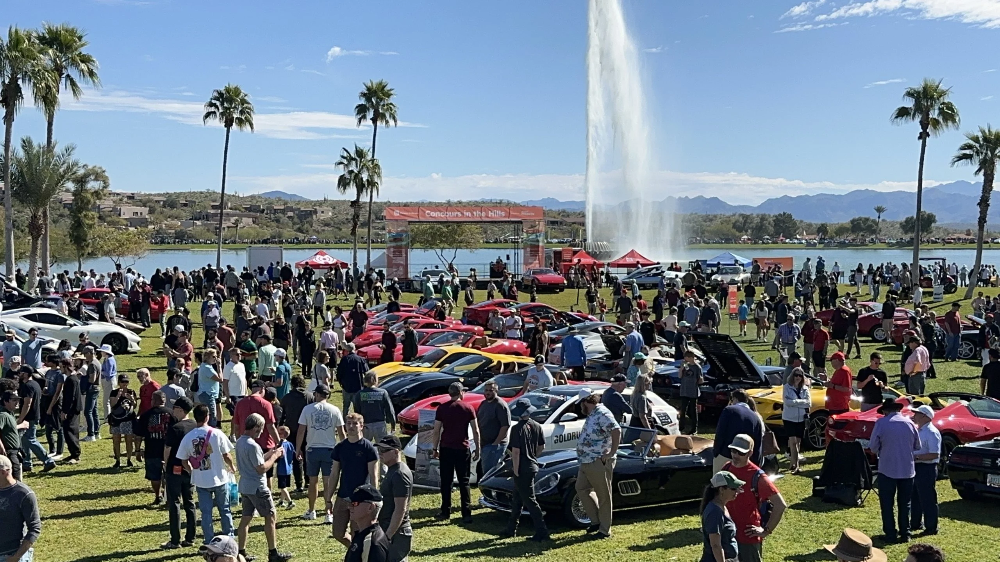
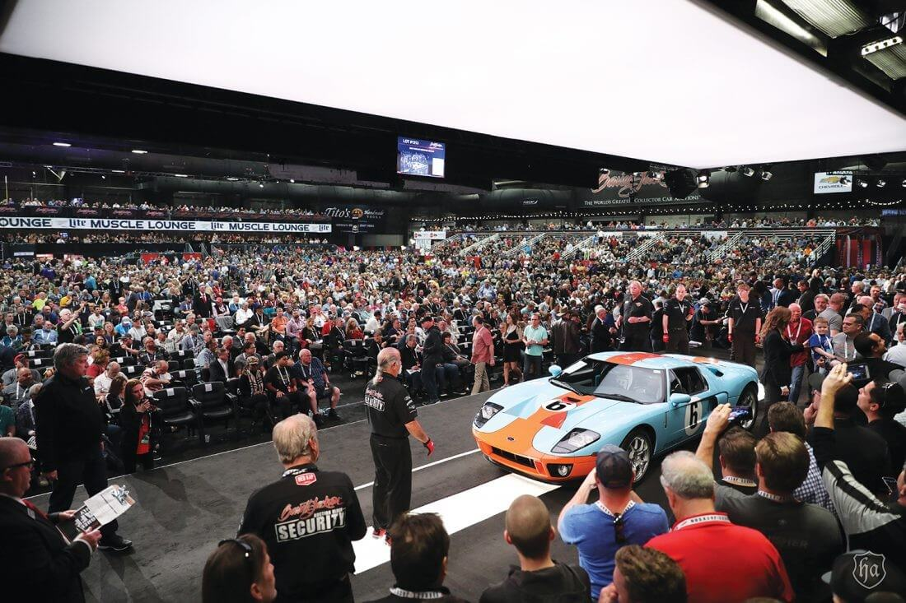
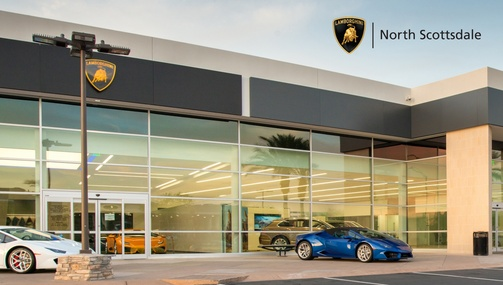

Virtually every single photo on this website was taken in the western part of the United States - Arizona, California, and Utah. I'd
like to walk you through the specific places where most of them were shot, and my favorite ones.
Being from Arizona, the majority of my content will be from the Scottsdale/Paradise Valley area because that's where most of the local
car scene is. Here's an outline:

Cars and Coffee
On the first Saturday of every month, people from all over the state gather together in Phoenix to show off their cars.
This event is hosted by a group called Highline Autos.

Concours in the Hills
Located at Fountain Park in Paradise Valley, this is a massive car show which happens once a year on February.
This was personally the first big show I ever attended. There were cars of every caliber you could imagine, from
JDM, to American Muscle, to European Hypercars.

Barrett-Jackson
The Barrett-Jackson is another big show in Scottsdale area that happens once per year, but this one takes place
in January. This is mainly an auto auction, but anyone can purchase tickets and look around in their showroom which
is filled with crazy cars that companies put on display.

Lamborghini Scottsdale/McLaren Scottsdale
Often overlooked, the respective Scottsdale showrooms of Lamborghini and McLaren are both great places for car
spotting. I've been lucky enough to see some pretty rare cars that were only around for a limited time.
For example, I was able to see a Lamborghini Centenario. Unfortunately I was only able to get pictures with my
iPhone so I won't be putting them on this site.